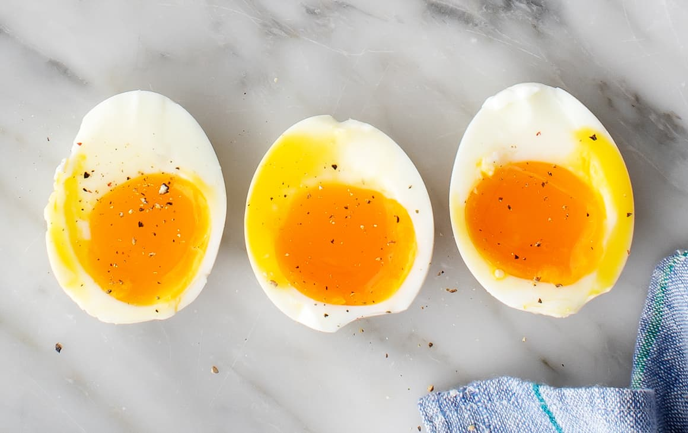

Soft Boiled Eggs

Description
Want perfect soft boiled eggs everytime? Can't tell when to bring them out of the pot?Try using the airfryer to make these delicious breakfast staples!
Ingredients
Steps
- Set your airfryer temperature to 100 deg C.
- Place eggs in airfyer for 7 minutes for a firm egg but runny yolk. Experiment with different timings depending on how you like your yolks!
- Thats it! Perfect soft boiled eggs!